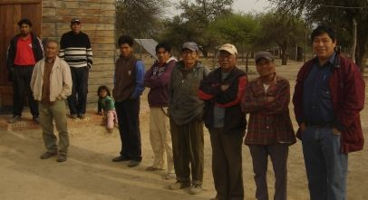
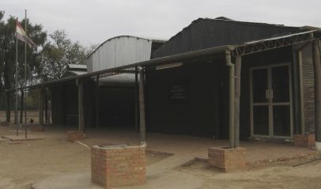
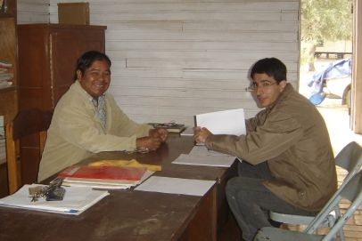
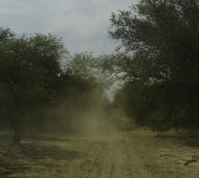
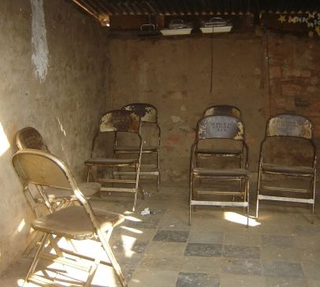
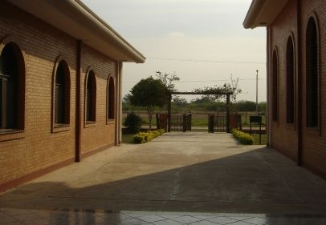
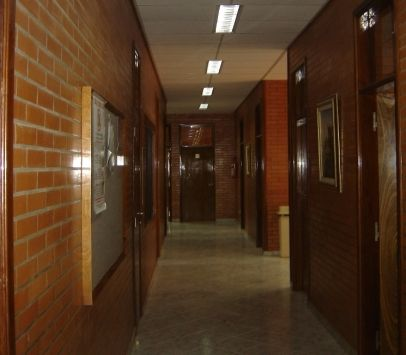
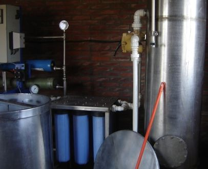

Mistolar.net
The unique and developing history
of the Nivaclé communities
descending from Mistolar
The unique and developing history
of the Nivaclé communities
descending from Mistolar
Your Subtitle text
August, 2011

Once we had to stop and wait for the dust to settle since we couldn't see anything.


Members waiting to greet us. Since almost nobody visits them, they receive any visitor with great expectation.
 The two vehicles that went. We used two pickups for security.
The two vehicles that went. We used two pickups for security. Panoramic view of the chapel and its surroundings. Photo taken from on top of the water tank.
Panoramic view of the chapel and its surroundings. Photo taken from on top of the water tank.
Panoramic view of the surroundings. Photo taken from on top of the water tank.


On the right, where the sign is, is the sacrament meeting room. To the left are the wings. During the week they are used for school. UHF equipment. Every day at 9:30 am they call Abundancia to be in communication and advise of any problem. It's the only mode of communication. At times, in the middle of the volley ball field, there's one point that can receive cellular signals from Argentina.
UHF equipment. Every day at 9:30 am they call Abundancia to be in communication and advise of any problem. It's the only mode of communication. At times, in the middle of the volley ball field, there's one point that can receive cellular signals from Argentina. Generator that provides electricity for the chapel. It's only used on Sundays for the chapel. It's a diesel engine.
Generator that provides electricity for the chapel. It's only used on Sundays for the chapel. It's a diesel engine.
 The sacrament meeting room of the Mistolar chapel.
The sacrament meeting room of the Mistolar chapel.


President Ortiz and Bro. Texeira. This is in the president's office in the chapel, next to the sacrament meeting room. Children of Mistolar. The one with pink clothes is the son of President Ortiz.
Children of Mistolar. The one with pink clothes is the son of President Ortiz. Other children of the branch. The one with the t-shirt is from Argentina, because many of the men go to work in "El Potrillo, Formosa, Argentina". So they have more contact with Argentina than with Paraguay.
Other children of the branch. The one with the t-shirt is from Argentina, because many of the men go to work in "El Potrillo, Formosa, Argentina". So they have more contact with Argentina than with Paraguay. Brother Pancho Yegros with his grandson. Bro. Pancho is one of the oldest in Mistolar.
Brother Pancho Yegros with his grandson. Bro. Pancho is one of the oldest in Mistolar. Sister Juliana Fermín. She didn't want her picture taken.
Sister Juliana Fermín. She didn't want her picture taken. Playing soccer a bit. The one in the middle is Bro. Justo Ríos, administrator of properties for the church.
Playing soccer a bit. The one in the middle is Bro. Justo Ríos, administrator of properties for the church. Photo of some Nivaclé houses.
Photo of some Nivaclé houses.
Child of Mistolar.
 These boys followed us everywhere.
These boys followed us everywhere.Each one says his name.
 The tractor they use to get around. Every six months about 40 members travel to district conference on a trailer pulled by the tractor. It takes two days to go and two days to return. They arrive all covered with dust.
The tractor they use to get around. Every six months about 40 members travel to district conference on a trailer pulled by the tractor. It takes two days to go and two days to return. They arrive all covered with dust.
 Members watching what we were doing. Behind, in white, was a water purification plant. Unfortunately it doesn't work anymore.
Members watching what we were doing. Behind, in white, was a water purification plant. Unfortunately it doesn't work anymore. All the members of Mistolar that wanted to have their picture taken. In front in the striped shirt, Bro. Texeira, Bro. Cecchi in the blue shirt, and the Bro. from the Educational System. In the middle with the beige colored jacket, the branch president, President Ortiz.
All the members of Mistolar that wanted to have their picture taken. In front in the striped shirt, Bro. Texeira, Bro. Cecchi in the blue shirt, and the Bro. from the Educational System. In the middle with the beige colored jacket, the branch president, President Ortiz.
 Road from Mistolar to Filadelfia. One of the pickups is ahead, showing how much dust there is.
Road from Mistolar to Filadelfia. One of the pickups is ahead, showing how much dust there is.

Road from Mistolar to Filadelfia.

Road from Mistolar to Filadelfia.
 This shows the dust raised by the pickup. The tractor that the people use to travel covers them with dust all the way.
This shows the dust raised by the pickup. The tractor that the people use to travel covers them with dust all the way.


 Rheas running through the field when we approached to take a picture.
Rheas running through the field when we approached to take a picture.

The room where the new Nivaclé congregation meets in Neuland. Neuland is about 25 kilometers from Filadelfia.

Chapel of Abundancia 1 and Abundancia 2.


Chapel of Abundancia 1 and Abundancia 2.


Halls of the chapel.


Water desalinization plant for the community to have potable water.
 Sacrament meeting room in the Abundancia chapel.
Sacrament meeting room in the Abundancia chapel. Panoramic view of the Abundancia sacrament meeting room.
Panoramic view of the Abundancia sacrament meeting room.